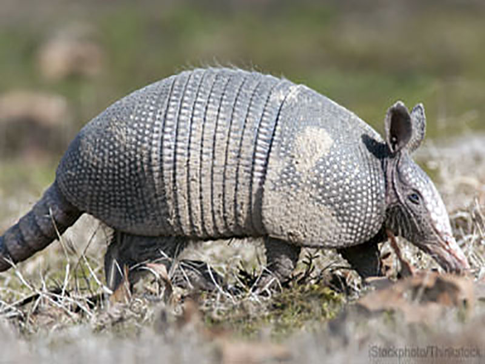
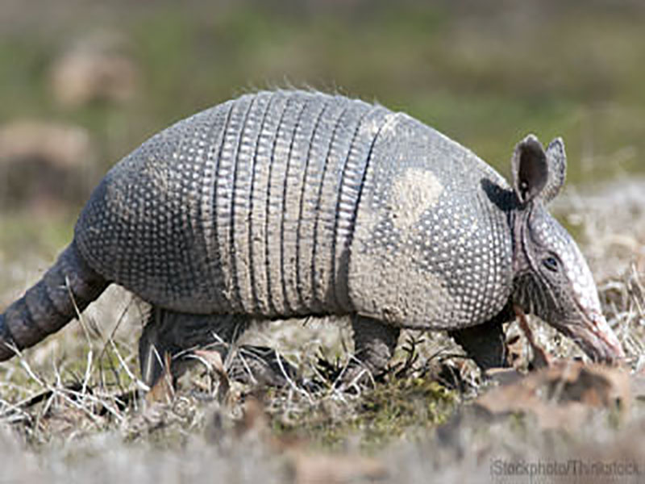

Overview
Armadillos are New World placental mammals with a leathery armour shell. The Chlamyphoridae and Dasypodidae are the only surviving families in the order, which is part of the superorder Xenarthra, along with the anteaters and sloths. The word armadillo means "little armoured one" in Spanish.
About nine extant genera and 21 extant species of armadillo have been described, some of which are distinguished by the number of bands on their armour. Their average length is about 75 cm (30 in), including tail. All species are native to the Americas, where they inhabit a variety of different environments.
Recent genetic research suggests that an extinct group of giant armoured mammals, the glyptodonts, should be included within the lineage of armadillos, having diverged some 35 million years ago, much more recently than previously assumed.